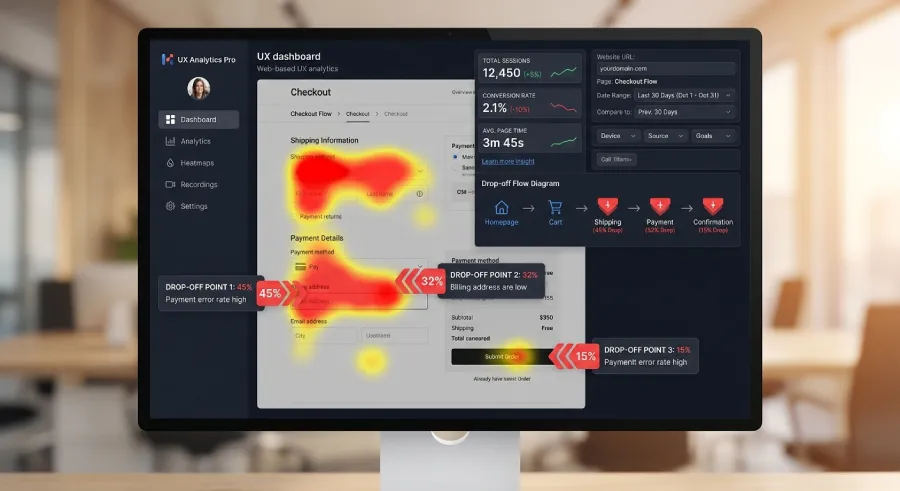

You will never get an email that says "I saw your website and didn't like it." You will never get a call explaining what made you lose a client. People don't explain why they left. They just close the tab and move on to the next name.
This is the most dangerous form of rejection, because it leaves no trace. There's no complaint to read, no comment to respond to. There's just a traffic number that never turned into a message, and nobody tells you why.
Why You Never Hear About It
When someone visits your website, they owe you nothing. They have no relationship with you yet, no commitment, no reason to give you feedback. If something confuses them, if something makes them hesitate, the natural reaction isn't to explain the problem to you. It's to leave, at no cost, with no explanation, and try the next option.
Which means you can't rely on feedback to understand what isn't working. The only way to find out is to actually look at the data most people never check, instead of guessing based on what feels intuitive.
Where People Usually Get Stuck
In broad terms, visitors tend to drop off at three different moments: before they understand what you do, after they understand it but before they trust it, or after they've decided to act but hit friction in actually reaching you. Each of these has already been covered on this blog, in the articles on first impressions, trust signals, and mobile usability. What's missing for most professionals isn't more advice on what might be going wrong. It's a way to actually find out which one it is, on their own website, with their own visitors.
How to Actually See What's Happening
This is where most professional websites stop looking altogether, and it's exactly where the useful information lives.
Session Recordings
Tools that record anonymized playback of real visits let you literally watch where someone's cursor hesitates, where they scroll back and forth without settling, and at what exact point they leave. Watching even ten of these recordings usually reveals a pattern within minutes that no amount of guessing would have surfaced.

Heatmaps
A click heatmap and a scroll heatmap together tell you two very different things. The click map shows whether people are trying to click on things that aren't actually clickable, a strong signal of confusion. The scroll map shows what percentage of visitors ever reach your call-to-action if it isn't in the first screen. If most visitors never scroll far enough to see your contact button, that's not a guess anymore. That's a number.
A Simple Funnel in Analytics
Setting up a basic funnel, homepage visit, then a key page like your services or about page, then the contact page, then a submitted form, shows you exactly where the drop-off is biggest. If most people make it to the contact page but never submit the form, the problem is almost certainly the form itself. If most people never even reach the contact page, the problem is earlier, in the message or the navigation.
What to Do Once You Can See It
Once the data shows you where the drop-off happens, the fix usually isn't complicated. It's just no longer a mystery. A funnel that dies before the contact page points back to clarity and trust. A funnel that dies on the contact page itself points to friction in the form or the process. Either way, you're now solving a specific, visible problem instead of redesigning the entire site on a hunch.
This doesn't need to become a full-time analytics habit. A short review once a quarter, watching a handful of session recordings and checking the funnel numbers, is usually enough to catch the moment your site quietly started losing people.
The Bottom Line
You will never learn the names of the people who quietly left your website. That doesn't mean they weren't real, or that it didn't matter. It just means the responsibility to prevent it sits entirely with you, before it happens, not after.
Most professionals never look past their visitor count. The ones who do usually find, within a single quarter, exactly where they were losing people, and exactly what to fix, without ever needing a single person to tell them.
Want to know exactly where your website is quietly losing clients?
At Evida Studio, we set up the tracking that shows you where visitors actually drop off, so fixing your site stops being guesswork.
Let's Talk About Your Project